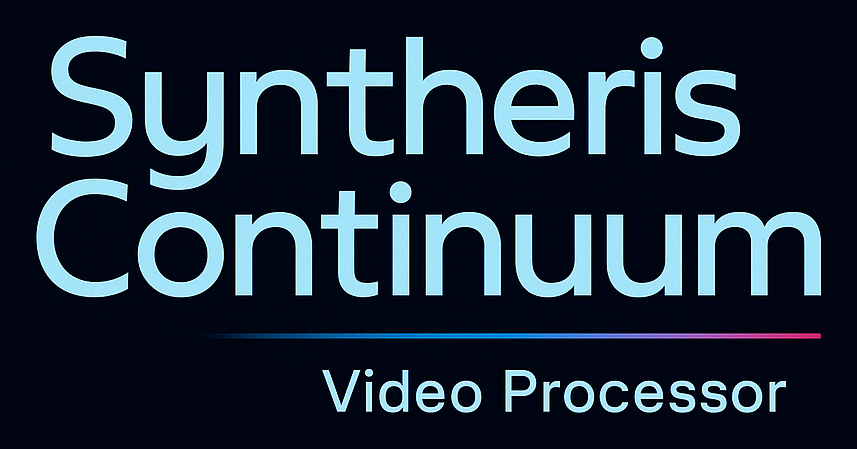

A local Windows application that generates intermediate frames to change a clip's frame rate — with duration preservation, fortified error handling, and research-oriented presets wrapped around RIFE v4.26.
Syntheris Continuum takes a finished clip and generates the frames in between — turning, for example, a 24 fps AI-generated shot into smooth 60 fps footage. A Gradio web interface brings together RIFE inference and FFmpeg preparation, assembly, and audio handling in one local pipeline.
It exposes controls for scene handling, motion adaptation, and batch processing, and it validates what it produces: durations are recorded, checked, and corrected, and failures are caught, logged, and retried through a fallback path instead of silently dropping segments.
Everything runs on your own machine. No uploads, no queue, no account — your clips never leave the workstation.
Continuum lives between clip generation or capture and editing. It is a focused interpolation tool — not a full editor, and not a restoration suite.
Continuum does not claim a new interpolation model. Its contribution is the engineering built around RIFE — the checks, fallbacks, and timestamp discipline that make interpolation dependable on real clips. Tap any item to open it.
The processor records the source duration, checks intermediate and final durations, and attempts correction through trimming or cloned-frame padding when necessary. Quality checks compare duration and frame-count relationships across the pipeline, so a clip that goes in at 10.00 seconds comes out at 10.00 seconds — not a few frames short.
These checks aim to keep the timeline stable; they do not guarantee invisible corrections or success on every input.
Motion-adaptive ATFI processing adds analysis and selective interpolation around the backend. When a segment fails, the processor catches the failure, logs diagnostic details, and attempts direct interpolation through its fallback method. If that also fails, it can retain the original segment — so completion does not necessarily mean every segment received interpolation.
Timeout handling and GPU cleanup improve failure visibility, without promising a universal completion rate.
The release includes v4.26 configuration and detection support, with fractional FPS command construction. The command builder passes a decimal --fps value; it does not pass unsupported --fps_num / --fps_den switches. Preset metadata carries rational rates such as 60000/1001, while the effective command uses the requested target FPS.
Check the actual selected rate rather than assuming a preset name means exactly 60 fps. The bundled HDv3 weight's exact upstream release is undocumented — a v4.26 capability label does not identify that weight.
The project's “research-validated” terminology refers to configurations and checks informed by retained research notes — it is not an independent certification. Timestamp-reset helpers and segment concatenation address timebase accumulation: the repaired concat-demuxer path resets each input to zero and lets the demuxer advance the timeline.
The current crossfade-filter builder uses simple concatenation to avoid duplication; this release does not promise crossfade joins.
Batch orchestration tracks per-file status and errors across a whole queue. Scene segmentation, optional CFR preparation, audio extraction and muxing, and output validation surround the inference step.
Recovery paths can change the result — for example, emergency audio handling may preserve video without audio. Review logs and outputs before delivery.
Select a stage to see what happens inside it. RIFE runs on PyTorch; FFmpeg and ffprobe handle media operations and inspection; OpenCV and NumPy support image and numerical work.
The Windows launcher starts the quick launcher, which serves the Gradio interface locally — normally at http://127.0.0.1:7860. Input settings, presets, and processing output all live in that one browser page, backed entirely by the local machine.
Broadcast and AI-video rates are rarely whole numbers. Continuum's command builder preserves fractional FPS end to end — the repair that stopped 59.94 from being truncated to 59 is covered by a dedicated regression test.
The struck-through flags don't exist in the bundled CLI — an earlier test expected them, and the expectation was wrong, not the tool.
| Conversion | What happens |
|---|---|
| 24 → 60 fps | 2.5× multiplier — the primary research preset case |
| 24 → 30 fps | Quality-focused, duration-preserved conversion |
| 59.94 fps | 60000/1001 rational rate, passed as an exact decimal |
| Any → CFR | Optional constant-frame-rate preparation before inference |
The source release ships application code and a RIFE weight — no installed Python environment and no bundled FFmpeg. Setup builds the environment locally, on each machine.
setup.batCreates the app-local .venv, installs the pinned requirements, checks imports and dependencies, exercises the compute device, verifies FFmpeg — and creates the Syntheris Continuum desktop shortcut with the official icon. Accepts -PythonExe and -NonInteractive.
Open the Syntheris Continuum desktop shortcut, or run windows_launcher.bat. The launcher uses only the local venv and points you back to setup if it's missing.
Go to the local address the launcher prints — normally http://127.0.0.1:7860 — pick a research preset, drop in a clip, and process.
Stated plainly, because a tool you run on production footage should tell you where its evidence ends.
Interpolation preserves output resolution. Scale / UHD settings control RIFE's internal interpolation scale — they are not super-resolution.
One pin set is intended for both RTX 4080 and RTX 5090, and real CUDA kernel execution was verified on an RTX 5090. The 4080 was not physically tested in this release pass, and CPU verification is not a promise of practical CPU throughput.
No performance, quality-improvement, or reliability benchmark is re-certified in this release. Older numeric claims in historical documents are just that — historical. The retired performance test module provides no benchmark coverage.
The bundled HDv3 weight is MIT-licensed, but its exact upstream release is undocumented — checked against the official Practical-RIFE archives without a hash match, and recorded openly in MODEL_PROVENANCE.md. No FILM backend or FILM model is shipped.
What was verified: fresh setup end-to-end on Python 3.11.9, RTX 5090 kernel execution, 45 passing configured tests with one documented legacy-module skip, and the Windows launcher serving the UI over HTTP. Those checks do not certify every real-world clip or production reliability — and the page won't pretend otherwise.
Clone the repository, run setup, and interpolate your first clip tonight. Issues, research notes, and the full documentation live alongside the code.
Licensing: Syntheris-owned code is MIT — Copyright (c) 2025 Syntheris Studios Inc. Brand assets are excluded from the MIT license and remain the property of Syntheris Studios Inc., all rights reserved. Third-party code, weights, and runtimes — including PyTorch / CUDA and NVIDIA terms — retain their own licenses.